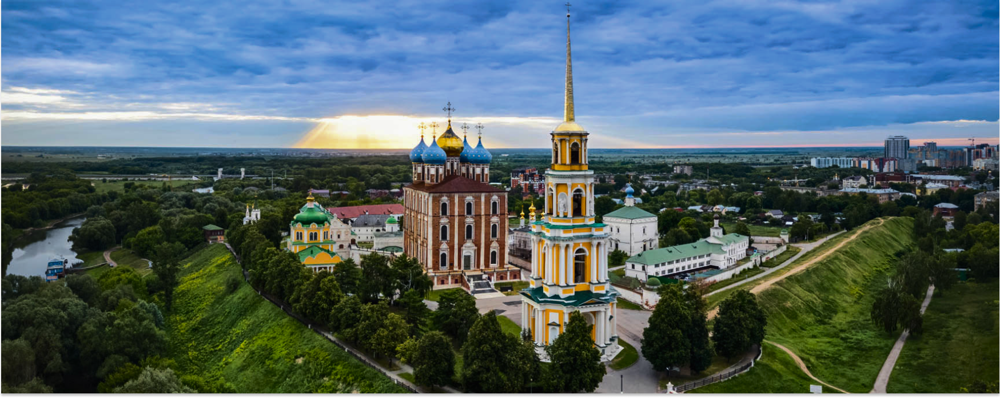

←Назад

Бронзовая фигура учёного в рост установлена на невысоком гранитном четырёхгранном ступенчатом постаменте. На фасаде накладными буквами выполнена простая надпись: «Константину Эдуардовичу Циолковскому». Свободная поза стоящей фигуры со скрещёнными на груди руками, лёгкий поворот приподнятой головы с устремлённым вверх взглядом создают ощущение сосредоточенного размышления и некоторой замкнутости. Свободно падающие складки плаща нарушают общую статичность фигуры.[3] Для изготовления постамента, бордюрного камня и элементов примыкающей к памятнику площадки использовался серо-зелёный уральский гранит. Вокруг памятника расположена клумба, на которой в тёплое время года высаживаются декоративные невысокие цветы.